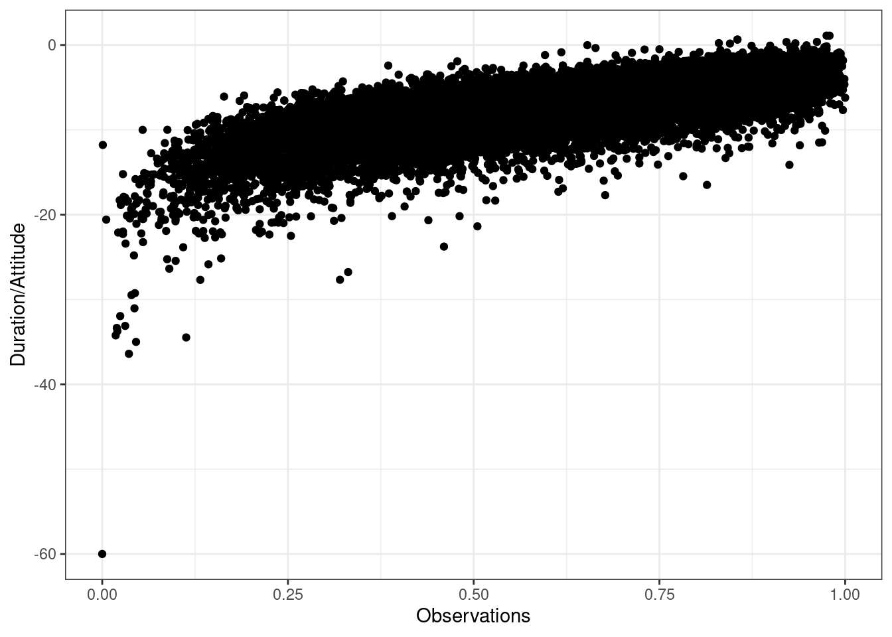

6 T-Test
6.1 One sample t-test
The example we used in the introduction was an example of the one sample t-test and we computed all statistics by hand to explain the underlying intuition. When you conduct hypothesis tests using R, you do not need to calculate these statistics by hand, since there are build-in routines to conduct the steps for you. Let us use the same example again to see how you would conduct hypothesis tests in R.
1. Formulate null and alternative hypotheses
The null hypothesis states that there is no difference between the true population mean \(\mu\) and the hypothesized value (i.e., \(10\)), while the alternative hypothesis states the opposite:
\[ H_0: \mu = 10 \\ H_1: \mu \neq 10 \]
2. Select an appropriate test
Because we would like to test if the mean of a variable is different from a specified threshold, the one-sample t-test is appropriate. The assumptions of the test are 1) that the variable is measured using an interval or ratio scale, and 2) that the sampling distribution is normal. Both assumptions are met since 1) listening time is a ratio scale, and 2) we deem the sample size (n = 50) large enough to assume a normal sampling distribution according to the central limit theorem.
3. Choose the level of significance
We choose the conventional 5% significance level.
4. Descriptive statistics and data visualization
Provide descriptive statistics using the stat.desc() function:
## nbr.val nbr.null nbr.na min max
## 50.0000000 0.0000000 0.0000000 1.9365049 64.9843737
## range sum median mean SE.mean
## 63.0478688 929.5971917 16.2246844 18.5919438 1.7744470
## CI.mean.0.95 var std.dev coef.var
## 3.5658848 157.4331152 12.5472354 0.6748749From this, we can already see that the mean is different from the hypothesized value. The question however remains, whether this difference is significantly different, given the sample size and the variability in the data. Since we only have one continuous variable, we can visualize the distribution in a histogram.
ggplot(data.frame(student_sample)) + geom_histogram(aes(x = student_sample),
fill = "white", color = "black", bins = 20) + theme_bw() +
labs(title = "Distribution of values in the sample",
x = "Hours", y = "Frequency")
5. Conduct significance test
In the beginning of the chapter, we saw, how you could conduct significance test by hand. However, R has built-in routines that you can use to conduct the analyses. The t.test() function can be used to conduct the test. To test if the listening time among WU students was 10, you can use the following code:
##
## One Sample t-test
##
## data: student_sample
## t = 4.842, df = 49, p-value = 0.00001327
## alternative hypothesis: true mean is not equal to 10
## 95 percent confidence interval:
## 15.02606 22.15783
## sample estimates:
## mean of x
## 18.59194Note that if you would have stated a directional hypothesis (i.e., the mean is either greater or smaller than 10 hours), you could easily amend the code to conduct a one sided test by changing the argument alternativefrom 'two.sided' to either 'less' or 'greater'.
6. Report results and draw a marketing conclusion
Note that the results are the same as above, when we computed the test by hand. You could summarize the results as follows:
On average, the listening times in our sample were different form 10 hours per month (Mean = 18.99 hours, SE = 1.78). This difference was significant t(49) = 5.058, p < .05 (95% CI = [15.42; 22.56]). Based on this evidence, we can conclude that the mean in our sample is significantly lower compared to the hypothesized population mean of \(10\) hours, providing evidence against the null hypothesis.
Note that in the reporting above, the number 49 in parenthesis refers to the degrees of freedom that are available from the output.
6.2 Comparing two means
In the one-sample test above, we tested the hypothesis that the population mean has some specific value \(\mu_0\) using data from only one sample. In marketing (as in many other disciplines), you will often be confronted with a situation where you wish to compare the means of two groups. For example, you may conduct an experiment and randomly split your sample into two groups, one of which receives a treatment (experimental group) while the other doesn’t (control group). In this case, the units (e.g., participants, products) in each group are different (‘between-subjects design’) and the samples are said to be independent. Hence, we would use a independent-means t-test. If you run an experiment with two experimental conditions and the same units (e.g., participants, products) were observed in both experimental conditions, the sample is said to be dependent in the sense that you have the same units in each group (‘within-subjects design’). In this case, we would need to conduct an dependent-means t-test. Both tests are described in the following sections, beginning with the independent-means t-test.
6.2.1 Independent-means t-test
Using an independent-means t-test, we can compare the means of two possibly different populations. It is, for example, quite common for online companies to test new service features by running an experiment and randomly splitting their website visitors into two groups: one is exposed to the website with the new feature (experimental group) and the other group is not exposed to the new feature (control group). This is a typical A/B-Test scenario.
As an example, imagine that a music streaming service would like to introduce a new playlist feature that let’s their users access playlists created by other users. The goal is to analyse how the new service feature impacts the listening time of users. The service randomly splits a representative subset of their users into two groups and collects data about their listening times over one month. Let’s create a data set to simulate such a scenario.
set.seed(321)
hours_population_1 <- rgamma(25000, shape = 2, scale = 10)
set.seed(12567)
sample_1 <- sample(1:25000, size = 98, replace = FALSE)
sample_1_hours <- hours_population_1[sample_1]
sample_1_df <- data.frame(hours = round(sample_1_hours,
0), group = "A")
set.seed(321)
hours_population_2 <- rgamma(25000, shape = 2.5, scale = 11)
set.seed(12567)
sample_2 <- sample(1:25000, size = 112, replace = FALSE)
sample_2_hours <- hours_population_2[sample_2]
sample_2_df <- data.frame(hours = round(sample_2_hours,
0), group = "B")
hours_a_b <- rbind(sample_1_df, sample_2_df)
head(hours_a_b)This data set contains two variables: the variable hours indicates the music listening times (in hours) and the variable group indicates from which group the observation comes, where ‘A’ refers to the control group (with the standard service) and ‘B’ refers to the experimental group (with the new playlist feature). Let’s first look at the descriptive statistics by group using the describeBy function:
##
## Descriptive statistics by group
## group: A
## vars n mean sd median trimmed mad min max range skew kurtosis
## X1 1 98 18.11 12.1 15 16.88 10.38 2 65 63 1.08 1.21
## se
## X1 1.22
## --------------------------------------------------------
## group: B
## vars n mean sd median trimmed mad min max range skew kurtosis
## X1 1 112 28.5 17.97 24.5 26.56 15.57 1 83 82 0.96 0.82
## se
## X1 1.7From this, we can already see that there is a difference in means between groups A and B. We can also see that the number of observations is different, as is the standard deviation. The question that we would like to answer is whether there is a significant difference in mean listening times between the groups. Remember that different users are contained in each group (‘between-subjects design’) and that the observations in one group are independent of the observations in the other group. Before we will see how you can easily conduct an independent-means t-test, let’s go over some theory first.
6.2.1.1 Theory
As a starting point, let us label the unknown population mean of group A (control group) in our experiment \(\mu_1\), and that of group B (experimental group) \(\mu_2\). In this setting, the null hypothesis would state that the mean in group A is equal to the mean in group B:
\[ H_0: \mu_1=\mu_2 \]
This is equivalent to stating that the difference between the two groups (\(\delta\)) is zero:
\[ H_0: \mu_1 - \mu_2=0=\delta \]
That is, \(\delta\) is the new unknown population parameter, so that the null and alternative hypothesis become:
\[ H_0: \delta = 0 \\ H_1: \delta \ne 0 \]
Remember that we usually don’t have access to the entire population so that we can not observe \(\delta\) and have to estimate is from a sample statistic, which we define as \(d = \bar x_1-\bar x_2\), i.e., the difference between the sample means from group a (\(\bar x_1\)) and group b (\(\bar x_2\)). But can we really estimate \(d\) from \(\delta\)? Remember from the previous chapter, that we could estimate \(\mu\) from \(\bar x\), because if we (hypothetically) take a larger number of samples, the distribution of the means of these samples (the sampling distribution) will be normally distributed and its mean will be (in the limit) equal to the population mean. It turns out that we can use the same underlying logic here. The above samples were drawn from two different populations with \(\mu_1\) and \(\mu_2\). Let us compute the difference in means between these two populations:
## [1] -7.422855This means that the true difference between the mean listening times of groups a and b is -7.42. Let us now repeat the exercise from the previous chapter: let us repeatedly draw a large number of \(20,000\) random samples of 100 users from each of these populations, compute the difference (i.e., \(d\), our estimate of \(\delta\)), store the difference for each draw and create a histogram of \(d\).
set.seed(321)
hours_population_1 <- rgamma(25000, shape = 2, scale = 10)
hours_population_2 <- rgamma(25000, shape = 2.5, scale = 11)
samples <- 20000
mean_delta <- matrix(NA, nrow = samples)
for (i in 1:samples) {
student_sample <- sample(1:25000, size = 100, replace = FALSE)
mean_delta[i, ] <- mean(hours_population_1[student_sample]) -
mean(hours_population_2[student_sample])
}
ggplot(data.frame(mean_delta)) + geom_histogram(aes(x = mean_delta),
bins = 30, fill = "white", color = "black") + theme_bw() +
theme(legend.title = element_blank()) + geom_vline(aes(xintercept = mean(mean_delta)),
size = 1) + xlab("d") + ggtitle(TeX(sprintf("%d samples; $d_{\\bar{x}}$ = %.2f",
samples, round(mean(mean_delta), 2))))
This gives us the sampling distribution of the mean differences between the samples. You will notice that this distribution follows a normal distribution and is centered around the true difference between the populations. This means that, on average, the difference between two sample means \(d\) is a good estimate of \(\delta\). In our example, the difference between \(\bar x_1\) and \(\bar x_2\) is:
## [1] 18.11224## [1] 28.5## [1] -10.38776Now that we have \(d\) as an estimate of \(\delta\), how can we find out if the observed difference is significantly different from the null hypothesis (i.e., \(\delta = 0\))?
Recall from the previous section, that the standard deviation of the sampling distribution \(\sigma_{\bar x}\) (i.e., the standard error) gives us indication about the precision of our estimate. Further recall that the standard error can be calculated as \(\sigma_{\bar x}={\sigma \over \sqrt{n}}\). So how can we calculate the standard error of the difference between two population means? According to the variance sum law, to find the variance of the sampling distribution of differences, we merely need to add together the variances of the sampling distributions of the two populations that we are comparing. To find the standard error, we only need to take the square root of the variance (because the standard error is the standard deviation of the sampling distribution and the standard deviation is the square root of the variance), so that we get:
\[ \sigma_{\bar x_1-\bar x_2} = \sqrt{{\sigma_1^2 \over n_1}+{\sigma_2^2 \over n_2}} \]
But recall that we don’t actually know the true population standard deviation, so we use \(SE_{\bar x_1-\bar x_2}\) as an estimate of \(\sigma_{\bar x_1-\bar x_2}\):
\[ SE_{\bar x_1-\bar x_2} = \sqrt{{s_1^2 \over n_1}+{s_2^2 \over n_2}} \]
Hence, for our example, we can calculate the standard error as follows:
## [1] 146.4924## [1] 322.9189## [1] 2.092373Recall from above that we can calculate the t-statistic as:
\[ t= {\bar x - \mu_0 \over {s \over \sqrt{n}}} \]
Exchanging \(\bar x\) for \(d\), we get
\[ t= {(\bar{x}_1 - \bar{x}_2) - (\mu_1 - \mu_2) \over {\sqrt{{s_1^2 \over n_1}+{s_2^2 \over n_2}}}} \]
Note that according to our hypothesis \(\mu_1-\mu_2=0\), so that we can calculate the t-statistic as:
## [1] -4.964581Following the example of our one sample t-test above, we would now need to compare this calculated test statistic to a critical value in order to assess if \(d\) is sufficiently far away from the null hypothesis to be statistically significant. To do this, we would need to know the exact t-distribution, which depends on the degrees of freedom. The problem is that deriving the degrees of freedom in this case is not that obvious. If we were willing to assume that \(\sigma_1=\sigma_2\), the correct t-distribution has \(n_1 -1 + n_2-1\) degrees of freedom (i.e., the sum of the degrees of freedom of the two samples). However, because in real life we don not know if \(\sigma_1=\sigma_2\), we need to account for this additional uncertainty. We will not go into detail here, but R automatically uses a sophisticated approach to correct the degrees of freedom called the Welch’s correction, as we will see in the subsequent application.
6.2.1.2 Application
The section above explained the theory behind the independent-means t-test and showed how to compute the statistics manually. Obviously you don’t have to compute these statistics by hand in this section shows you how to conduct an independent-means t-test in R using the example from above.
1. Formulate null and alternative hypotheses
We wish to analyze whether there is a significant difference in music listening times between groups A and B. So our null hypothesis is that the means from the two populations are the same (i.e., there is no difference), while the alternative hypothesis states the opposite:
\[ H_0: \mu_1=\mu_2\\ H_1: \mu_1 \ne \mu_2 \]
2. Select an appropriate test
Since we have a ratio scaled variable (i.e., listening times) and two independent groups, where the mean of one sample is independent of the group of the second sample (i.e., the groups contain different units), the independent-means t-test is appropriate.
3. Choose the level of significance
We choose the conventional 5% significance level.
4. Descriptive statistics and data visualization
We can compute the descriptive statistics for each group separately, using the describeBy() function:
##
## Descriptive statistics by group
## group: A
## vars n mean sd median trimmed mad min max range skew kurtosis
## X1 1 98 18.11 12.1 15 16.88 10.38 2 65 63 1.08 1.21
## se
## X1 1.22
## --------------------------------------------------------
## group: B
## vars n mean sd median trimmed mad min max range skew kurtosis
## X1 1 112 28.5 17.97 24.5 26.56 15.57 1 83 82 0.96 0.82
## se
## X1 1.7This already shows us that the mean between groups A and B are different. We can visualize the data using a plot of means, boxplot, and a histogram.
ggplot(hours_a_b, aes(group, hours)) + geom_bar(stat = "summary",
color = "black", fill = "white", width = 0.7) +
geom_pointrange(stat = "summary") + labs(x = "Group",
y = "Listening time (hours)") + ggtitle("Means and standard errors of listening times") +
theme_bw()
ggplot(hours_a_b, aes(x = group, y = hours)) + geom_boxplot() +
labs(x = "Group", y = "Listening time (hours)") +
ggtitle("Boxplot of listening times") + theme_bw()
ggplot(hours_a_b, aes(hours)) + geom_histogram(col = "black",
fill = "darkblue") + labs(x = "Listening time (hours)",
y = "Frequency") + ggtitle("Histogram of listening times") +
facet_wrap(~group) + theme_bw()
5. Conduct significance test
To conduct the independent means t-test, we can use the t.test() function:
t.test(hours ~ group, data = hours_a_b, mu = 0, alternative = "two.sided",
conf.level = 0.95, var.equal = FALSE)##
## Welch Two Sample t-test
##
## data: hours by group
## t = -4.9646, df = 195.73, p-value = 0.000001494
## alternative hypothesis: true difference in means is not equal to 0
## 95 percent confidence interval:
## -14.514246 -6.261264
## sample estimates:
## mean in group A mean in group B
## 18.11224 28.500006. Report results and draw a marketing conclusion
The results showed that listening times were higher in the experimental group (Mean = 26.43, SE = 1.54) compared to the control group (Mean = 20.91, SE = 1.37). This means that the listening times were 10.39 hours higher on average in the experimental group, compared to the control group. An independent-means t-test showed that this difference is significant t(207) = 2.684, p < .05 (95% CI = [1.46,9.58]).
6.2.2 Dependent-means t-test
While the independent-means t-test is used when different units (e.g., participants, products) were assigned to the different condition, the dependent-means t-test is used when there are two experimental conditions and the same units (e.g., participants, products) were observed in both experimental conditions.
Imagine, for example, a slightly different experimental setup for the above experiment. Imagine that we do not assign different users to the groups, but that a sample of 100 users gets to use the music streaming service with the new feature for one month and we compare the music listening times of these users during the month of the experiment with the listening time in the previous month. Let us generate data for this example:
set.seed(321)
hours_population_1 <- rgamma(25000, shape = 2, scale = 10)
set.seed(12567)
sample_1 <- sample(1:25000, size = 100, replace = FALSE)
sample_1_hours <- hours_population_1[sample_1]
set.seed(321)
hours_population_2 <- rgamma(25000, shape = 2.5, scale = 11)
set.seed(12567)
sample_2 <- sample(1:25000, size = 100, replace = FALSE)
sample_2_hours <- hours_population_2[sample_2]
hours_a_b_paired <- data.frame(hours_a = round(sample_1_hours,
0), hours_b = round(sample_2_hours, 0))
head(hours_a_b_paired)Note that the data set has almost the same structure as before only that we know have two variables representing the listening times of each user in the month before the experiment and during the month of the experiment when the new feature was tested.
6.2.2.1 Theory
In this case, we want to test the hypothesis that there is no difference in mean the mean listening times between the two months. This can be expressed as follows:
\[ H_0: \mu_D = 0 \\ \] Note that the hypothesis only refers to one population, since both observations come from the same units (i.e., users). To use consistent notation, we replace \(\mu_D\) with \(\delta\) and get:
\[ H_0: \delta = 0 \\ H_1: \delta \neq 0 \]
where \(\delta\) denotes the difference between the observed listening times from the two consecutive months of the same users. As is the previous example, since we do not observe the entire population, we estimate \(\delta\) based on the sample using \(d\), which is the difference in mean listening time between the two months for our sample. Note that we assume that everything else (e.g., number of new releases) remained constant over the two month to keep it simple. We can show as above that the sampling distribution follows a normal distribution with a mean that is (in the limit) the same as the population mean. This means, again, that the difference in sample means is a good estimate for the difference in population means. Let’s compute a new variable \(d\), which is the difference between two month.
Note that we now have a new variable, which is the difference in listening times (in hours) between the two months. The mean of this difference is:
## [1] -11.65Again, we use \(SE_{\bar x}\) as an estimate of \(\sigma_{\bar x}\):
\[ SE_{\bar d}={s \over \sqrt{n}} \] Hence, we can compute the standard error as:
## [1] 2.151503The test statistic is therefore:
\[ t = {\bar d- \mu_0 \over SE_{\bar d}} \] on 99 (i.e., n-1) degrees of freedom. Now we can compute the t-statistic as follows:
## [1] -5.41482## [1] 1.984217Note that in the case of the dependent-means t-test, we only base our hypothesis on one population and hence there is only one population variance. This is because in the dependent sample test, the observations come from the same observational units (i.e., users). Hence, there is no unsystematic variation due to potential differences between users that were assigned to the experimental groups. This means that the influence of unobserved factors (unsystematic variation) relative to the variation due to the experimental manipulation (systematic variation) is not as strong in the dependent-means test compared to the independent-means test and we don’t need to correct for differences in the population variances.
6.2.2.2 Application
Again, we don’t have to compute all this by hand since the t.test(...) function can be used to do it for us. Now we have to use the argument paired=TRUE to let R know that we are working with dependent observations.
1. Formulate null and alternative hypotheses
We would like to the test if there is a difference in music listening times between the two consecutive months, so our null hypothesis is that there is no difference, while the alternative hypothesis states the opposite:
\[ H_0: \mu_D = 0 \\ H_0: \mu_D \ne 0 \]
2. Select an appropriate test
Since we have a ratio scaled variable (i.e., listening times) and two observations of the same group of users (i.e., the groups contain the same units), the dependent-means t-test is appropriate.
3. Choose the level of significance
We choose the conventional 5% significance level.
4. Descriptive statistics and data visualization
We can compute the descriptive statistics for each month separately, using the describe() function:
## hours_a_b_paired
##
## 3 Variables 100 Observations
## ---------------------------------------------------------------------------
## hours_a
## n missing distinct Info Mean Gmd .05 .10
## 100 0 38 0.998 17.93 13.16 3.00 5.90
## .25 .50 .75 .90 .95
## 8.00 15.00 25.25 34.30 39.05
##
## lowest : 2 3 4 5 6, highest: 40 41 46 50 65
## ---------------------------------------------------------------------------
## hours_b
## n missing distinct Info Mean Gmd .05 .10
## 100 0 48 0.999 29.58 20.3 5.95 8.00
## .25 .50 .75 .90 .95
## 15.75 25.00 40.00 54.20 63.30
##
## lowest : 3 4 5 6 8, highest: 63 69 78 81 83
## ---------------------------------------------------------------------------
## d
## n missing distinct Info Mean Gmd .05 .10
## 100 0 52 0.999 -11.65 23.75 -54.15 -35.20
## .25 .50 .75 .90 .95
## -23.25 -9.00 2.00 12.00 21.05
##
## lowest : -76 -64 -63 -60 -57, highest: 22 23 24 34 51
## ---------------------------------------------------------------------------This already shows us that the mean between the two months are different. We can visiualize the data using a plot of means, boxplot, and a histogram.
To plot the data, we need to do some restructuring first, since the variables are now stored in two different columns (“hours_a” and “hours_b”). This is also known as the “wide” format. To plot the data we need all observations to be stored in one variable. This is also known as the “long” format. We can use the melt(...) function from the reshape2package to “melt” the two variable into one column to plot the data.
library(reshape2)
hours_a_b_paired_long <- melt(hours_a_b_paired[, c("hours_a",
"hours_b")])
names(hours_a_b_paired_long) <- c("group", "hours")
head(hours_a_b_paired_long)Now we are ready to plot the data:
ggplot(hours_a_b_paired_long, aes(group, hours)) +
geom_bar(stat = "summary", color = "black", fill = "white",
width = 0.7) + geom_pointrange(stat = "summary") +
labs(x = "Group", y = "Listening time (hours)") +
ggtitle("Means and standard errors of listining times") +
theme_bw()
ggplot(hours_a_b_paired_long, aes(x = group, y = hours)) +
geom_boxplot() + labs(x = "Group", y = "Listening time (hours)") +
ggtitle("Boxplot of listening times") + theme_bw()
ggplot(hours_a_b_paired_long, aes(hours)) + geom_histogram(col = "black",
fill = "darkblue") + labs(x = "Listening time (hours)",
y = "Frequency") + ggtitle("Histogram of listening times") +
facet_wrap(~group) + theme_bw()
5. Conduct significance test
To conduct the independent means t-test, we can use the t.test() function with the argument paired = TRUE:
t.test(hours_a_b_paired$hours_a, hours_a_b_paired$hours_b,
mu = 0, alternative = "two.sided", conf.level = 0.95,
paired = TRUE)##
## Paired t-test
##
## data: hours_a_b_paired$hours_a and hours_a_b_paired$hours_b
## t = -5.4148, df = 99, p-value = 0.00000043
## alternative hypothesis: true difference in means is not equal to 0
## 95 percent confidence interval:
## -15.919048 -7.380952
## sample estimates:
## mean of the differences
## -11.656. Report results and draw a marketing conclusion
On average, the same users used the service more when it included the new feature (M = 25.96, SE = 1.68) compared to the service without the feature (M = 20.99, SE = 1.34). This difference was significant t(99) = 2.3781, p < .05 (95% CI = [0.82, 9.12]).
6.2.3 Further considerations
6.2.3.1 Type I and Type II Errors
When choosing the level of significance (\(\alpha\)). It is important to note that the choice of the significance level affects the type 1 and type 2 error:
- Type I error: When we believe there is a genuine effect in our population, when in fact there isn’t. Probability of type I error (\(\alpha\)) = level of significance.
- Type II error: When we believe that there is no effect in the population, when in fact there is.
This following table shows the possible outcomes of a test (retain vs. reject \(H_0\)), depending on whether \(H_0\) is true or false in reality.
| Retain H0 | Reject H0 | |
|---|---|---|
| H0 is true | Correct decision: 1-α (probability of correct retention); |
Type 1 error: α (level of significance) |
| H0 is false | Type 2 error: β (type 2 error rate) |
Correct decision: 1-β (power of the test) |
6.2.3.2 Significance level, sample size, power, and effect size
When you plan to conduct an experiment, there are some factors that are under direct control of the researcher:
- Significance level (\(\alpha\)): The probability of finding an effect that does not genuinely exist.
- Sample size (n): The number of observations in each group of the experimental design.
Unlike α and n, which are specified by the researcher, the magnitude of β depends on the actual value of the population parameter. In addition, β is influenced by the effect size (e.g., Cohen’s d), which can be used to determine a standardized measure of the magnitude of an observed effect. The following parameters are affected more indirectly:
- Power (1-β): The probability of finding an effect that does genuinely exists.
- Effect size (d): Standardized measure of the effect size under the alternate hypothesis.
Although β is unknown, it is related to α. For example, if we would like to be absolutely sure that we do not falsely identify an effect which does not exist (i.e., make a type I error), this means that the probability of identifying an effect that does exist (i.e., 1-β) decreases and vice versa. Thus, an extremely low value of α (e.g., α = 0.0001) will result in intolerably high β errors. A common approach is to set α=0.05 and β=0.80.
Unlike the t-value of our test, the effect size (d) is unaffected by the sample size and can be categorized as follows (see Cohen, J. 1988):
- 0.2 (small effect)
- 0.5 (medium effect)
- 0.8 (large effect)
In order to test more subtle effects (smaller effect sizes), you need a larger sample size compared to the test of more obvious effects. In this paper, you can find a list of examples for different effect sizes and the number of observations you need to reliably find an effect of that magnitude. Although the exact effect size is unknown before the experiment, you might be able to make a guess about the effect size (e.g., based on previous studies).
If you wish to obtain a standardized measure of the effect, you may compute the effect size (Cohen’s d) using the cohensD() function from the lsr package. Using the examples from the independent-means t-test above, we would use:
## [1] 0.6696301According to the thresholds defined above, this effect would be judged to be a small-medium effect.
For the dependent-means t-test, we would use:
## [1] 0.541482According to the thresholds defined above, this effect would also be judged to be a small-medium effect.
When constructing an experimental design, your goal should be to maximize the power of the test while maintaining an acceptable significance level and keeping the sample as small as possible. To achieve this goal, you may use the pwr package, which let’s you compute n, d, alpha, and power. You only need to specify three of the four input variables to get the fourth.
For example, what sample size do we need (per group) to identify an effect with d = 0.6, α = 0.05, and power = 0.8:
library(pwr)
pwr.t.test(d = 0.6, sig.level = 0.05, power = 0.8,
type = c("two.sample"), alternative = c("two.sided"))##
## Two-sample t test power calculation
##
## n = 44.58577
## d = 0.6
## sig.level = 0.05
## power = 0.8
## alternative = two.sided
##
## NOTE: n is number in *each* groupOr we could ask, what is the power of our test with 51 observations in each group, d = 0.6, and α = 0.05:
##
## Two-sample t test power calculation
##
## n = 51
## d = 0.6
## sig.level = 0.05
## power = 0.850985
## alternative = two.sided
##
## NOTE: n is number in *each* group6.2.3.3 P-values, stopping rules and p-hacking
From my experience, students tend to place a lot of weight on p-values when interpreting their research findings. It is therefore important to note some points that hopefully help to put the meaning of a “significant” vs. “insignificant” test result into perspective.
Significant result
- Even if the probability of the effect being a chance result is small (e.g., less than .05) it doesn’t necessarily mean that the effect is important.
- Very small and unimportant effects can turn out to be statistically significant if the sample size is large enough.
Insignificant result
- If the probability of the effect occurring by chance is large (greater than .05), the alternative hypothesis is rejected. However, this does not mean that the null hypothesis is true.
- Although an effect might not be large enough to be anything other than a chance finding, it doesn’t mean that the effect is zero.
- In fact, two random samples will always have slightly different means that would deemed to be statistically significant if the samples were large enough.
Thus, you should not base your research conclusion on p-values alone!
It is also crucial to determine the sample size before you run the experiment or before you start your analysis. Why? Consider the following example:
- You run an experiment
- After each respondent you analyze the data and look at the mean difference between the two groups with a t-test
- You stop when you have a significant effect
This is called p-hacking and should be avoided at all costs. Assuming that both groups come from the same population (i.e., there is no difference in the means): What is the likelihood that the result will be significant at some point? In other words, what is the likelihood that you will draw the wrong conclusion from your data that there is an effect, while there is none? This is shown in the following graph using simulated data - the color red indicates significant test results that arise although there is no effect (i.e., false positives).
Figure 6.1: p-hacking (red indicates false positives)